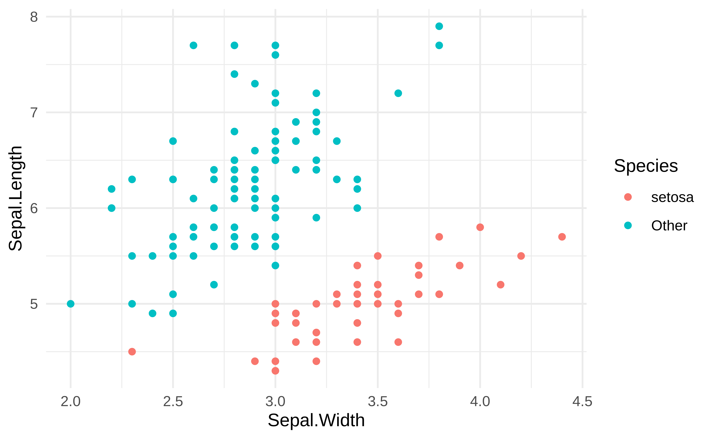

style_xaringan(
title_slide_background_image = "img/confetti.jpg"
)Presentation title
Presentation subtitle (if any)
class: center, middle
A statement of the overall goal / research question
class: inverse, center, middle
Section title
Hello World
Click the
Knitbutton to compile your presentationMake sure to commit and push all resulting files to your GitHub repo
class: inverse, middle, center
Using xaringan
xaringan
The presentation is created using the
xaringanpackageUse
---to separate slides and--for incremental builds
–
- Like this
Layouts
You can use plain text
- or bullet points
.pull-left[ or text in two columns \(^*\)] .pull-right[ - like - this]
.footnote[ [*] And add footnotes]
Code
# a boring regression
model <- lm(dist ~ speed, data = cars)
tidy(model)# A tibble: 2 × 5
term estimate std.error statistic p.value
<chr> <dbl> <dbl> <dbl> <dbl>
1 (Intercept) -17.6 6.76 -2.60 1.23e- 2
2 speed 3.93 0.416 9.46 1.49e-12glance(model)# A tibble: 1 × 12
r.squared adj.r.squa…¹ sigma stati…² p.value df logLik AIC BIC devia…³
<dbl> <dbl> <dbl> <dbl> <dbl> <dbl> <dbl> <dbl> <dbl> <dbl>
1 0.651 0.644 15.4 89.6 1.49e-12 1 -207. 419. 425. 11354.
# … with 2 more variables: df.residual <int>, nobs <int>, and abbreviated
# variable names ¹adj.r.squared, ²statistic, ³deviancePlots

Plot and text
.pull-left[ - Some text - goes here] .pull-right[

]
Tables
If you want to generate a table, make sure it is in the HTML format (instead of Markdown or other formats), e.g.,
| Sepal.Length | Sepal.Width | Petal.Length | Petal.Width | Species |
|---|---|---|---|---|
| 5.1 | 3.5 | 1.4 | 0.2 | setosa |
| 4.9 | 3.0 | 1.4 | 0.2 | setosa |
| 4.7 | 3.2 | 1.3 | 0.2 | setosa |
| 4.6 | 3.1 | 1.5 | 0.2 | setosa |
| 5.0 | 3.6 | 1.4 | 0.2 | setosa |
| 5.4 | 3.9 | 1.7 | 0.4 | setosa |
Images

Or you can also include a full page image. See next slide.
background-image: url(https://images.unsplash.com/photo-1535448033526-c0e85c9e6968?ixlib=rb-1.2.1&ixid=eyJhcHBfaWQiOjEyMDd9&auto=format&fit=crop&w=1650&q=80)
Math Expressions
You can write LaTeX math expressions inside a pair of dollar signs, e.g. $+$ renders \(\alpha+\beta\). You can use the display style with double dollar signs:
$$\bar{X}=\frac{1}{n}\sum_{i=1}^nX_i$$\[\bar{X}=\frac{1}{n}\sum_{i=1}^nX_i\]
Limitations:
The source code of a LaTeX math expression must be in one line, unless it is inside a pair of double dollar signs, in which case the starting
$$must appear in the very beginning of a line, followed immediately by a non-space character, and the ending$$must be at the end of a line, led by a non-space character;There should not be spaces after the opening
$or before the closing$.Math does not work on the title slide (see #61 for a workaround).
Feeling adventurous?
Want to find out more about
xaringan? See https://slides.yihui.name/xaringan/#1.You are welcomed to use the default styling of the slides. In fact, that’s what I expect majority of you will do. You will differentiate yourself with the content of your presentation.
But some of you might want to play around with slide styling. The
xaringanthemerprovides some solutions for this that: https://pkg.garrickadenbuie.com/xaringanthemer.And if you want more bells and whistles, there is also
xaringanExtra: https://pkg.garrickadenbuie.com/xaringanExtra.